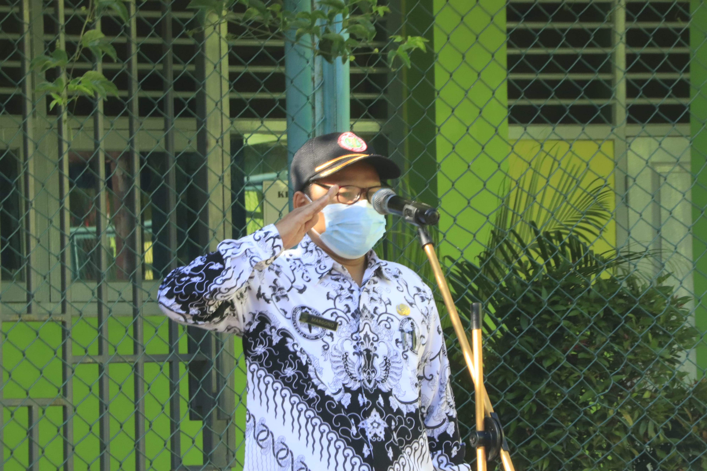

Workshop

Rapat Luring

SMK Negeri 1 Depok adalah sebuah Sekolah Menengah Kejuruan (SMK) Negeri pertama di Kota Depok dan telah mendapat status sekolah PK (Pusat Keunggulan) dan status sekolah BLUD (Badan Layanan Umum Daerah)
SMK Negeri 1 Depok adalah sebuah Sekolah Menengah Kejuruan (SMK) Negeri pertama di Kota Depok dan telah mendapat status sekolah PK (Pusat Keunggulan) dan status sekolah BLUD (Badan Layanan Umum Daerah).
Sekolah ini pada awalnya terdiri dari 2 program studi yaitu Program Studi Mekanik Otomotif dan Program Studi Akomodasi Perhotelan. Namun, sekarang sudah bertambah program studi menjadi 6 program yaitu Permodelan Perangkat Lunak dan Gim, Desain Komunikasi dan Visual, Akomodasi Perhotelan, Akutansi, Teknik Bisnis Sepeda Motor, Teknik Kendaraan Ringan.

Puji dan syukur marilah kita panjatkan kehadirat Allah SWT. atas limpahan rahmat, taufik dan hidayah-Nya, kita semua diberikan kesehatan sehingga dapat melaksanakan tugas kita di bidang pendidikan.
Para pengunjung situs yang berbahagia, kami ucapkan selamat datang di situs SMKN 1 Depok ini. Kami menyadari sepenuhnya dalam rangka memajukan pendidikan di era berkembangnya Teknologi Informasi yang begitu pesat, sangat diperlukan berbagai sarana prasarana yang kondusif